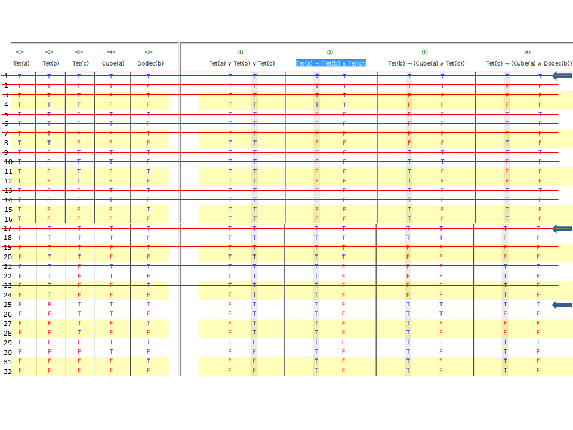

As perguntas 4 a 7 do teste T2012-1 têm uma introdução que diz para classificar cada uma das frases nelas indicadas relativamente ao seguinte conjunto de frases do Mundo de Tarski:
(1) Tet(a) ∨ Tet(b) ∨ Tet(c)
(2) Tet(a) → (Tet(b) ∧ Tet(c))
(3) Tet(b) → (Cube(a) ∧ Tet(c))
(4) Tet(c) → (Cube(a) ∧ Dodec(b))
Tal como muitos outros exercícios, a resolução pode seguir abordagens diferentes.
Primeira abordagem
Vamos usar o método de analisar a situação a partir de modelos. A frase (1) afirma que ou a ou b ou c é um tetraedro. Se for a, a frase (2) implica que b seja um tetraedro e c também. Se for b, a frase (3) implica que a é um cubo e c um tetraedro. Portanto, c tem que ser um tetraedro. Como para chegar a esta conclusão não se usou em nada o significado dos predicados, conclui-se que Tet(c) é uma consequência tautológica das primeiras 4 frases (opção a. da pergunta 4).
Mas a frase (4) implica que, sendo c um tetraedro, b seja um dodecaedro. Mas, pelo significado dos predicados Dodec(x) e Cube(x), então b não é um cubo. Daqui conclui-se que não existem linhas não espúrias em que as quatro frases de contexto e Cube(b) sejam simultaneamente verdade, pelo que Cube(b) é não satisfazível (opção b. da pergunta 5).
O facto de c ser um tetraedro mais a frase (4) também implicam que a seja um cubo e, pelo significado dos predicados, não seja um dodecaedro. Portanto, ¬Dodec(a) é consequência lógica das 4 frases mas não é consequência tautológica (foi necessário usar o significado dos predicados) (opção d. da pergunta 6).
Finalmente, o objeto d não é mencionado nas 4 frases pelo que estas são compatíveis tanto com d ser um tetraedro como não ser. Portanto, Tet(d) é satisfazível mas não consequência lógica (opção d. da pergunta 7).
Segunda abordagem
Outra forma de responder às questões é elaborar uma tabela de verdade. Em rigor, a tabela de verdade deveria ter tantas colunas de referência quantas as fórmulas atómicas mencionadas em todo o problema. Isso daria 8 colunas e uma tabela muito grande. Vamos por isso usar uma abordagem mista, em que fazemos a tabela de verdade apenas para as colunas das 4 fórmulas de contexto do problema e depois analisamos as situações das perguntas 4 a 7 uma de cada vez.
A tabela de verdade encontra-se a seguir. Como um objeto não pode ter duas formas em simultâneo, todas as linhas em que Cube(a) e Tet(a) sejam simultaneamente verdadeiras são espúrias. O mesmo sucede para todas as linhas em que sejam verdadeiras em simultâneo Tet(b) e Dodec(b). Estas linhas estão riscadas.

As linhas da tabela de verdade em que as 4 frases são simultaneamente verdade são as linhas 1, 17 e 25 (assinaladas com setas). Como nestas três linhas Tet(c) é verdade, podemos concluir que é consequência tautológica das 4 frases (opção a da pergunta 4).
No Mundo de Tarski, Cube(b) <=> ¬Tet(b) /\ ¬Dodec(b) (linhas 10, 12, 14, 16, 26, 28, 30, 32). Como as linhas 1 e 17 são espúrias, a única linha não espúria em que as quatro frases são simultaneamente verdadeiras é a 25. Mas aí Cube(b) é falso e, portanto, não existe nenhuma situação em que seja satisfazível em conjunto com as outras quatro frases. Logo, a resposta é "não satisfazível" (opção b. da pergunta 5).
Como Dodec(a) não existe nas colunas de referência, seria preciso acrescentá-la e duplicar a tabela com metade a verdade e metade a falso. Isto significa que na metade a verdade, ¬Dodec(a) seria falso nas linhas em que as outras 4 expressões são simultaneamente verdadeiras e portanto não pode ser consequência tautológica. Concentrando a atenção apenas nas linhas não espúrias, temos que a seguinte equivalência se aplica no Mundo de Tarski: ¬Dodec(a) <=> Tet(a) \/ Cube(a). Na linha 25, a única em que as outras 4 frases são verdade, ¬Dodec(a) é verdade. Portanto, é consequência lógica (opção d. da pergunta 6).
O objeto d não é mencionado nas fórmulas atómicas de referência. Portanto, seria preciso uma vez mais duplicar a tabela, metade com Tet(d) verdade e metade falso. Sendo assim, na linha 25 iria uma vez estar Tet(d) verdade e na outra vez falso, pelo que Tet(d) é satisfazível mas não consequência lógica (opção d. da pergunta 7).